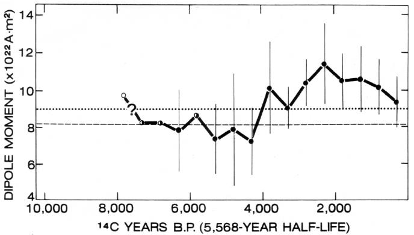
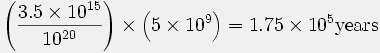

QUÉLQUES ÂGES DE LA TERRE SELON LES CRÉATIONNISTES
Autres liens :
|
Malgré les preuves concluantes de l'antiquité de la Terre, les partisans du « créationnisme » scientifique s'obstinent à affirmer que la Terre n'a qu'environ 10 000 ans (Tableau 9). Comment arrivent-ils à ces chiffres ? Ils ne disposent d'aucun ensemble cohérent de données qui conduise à une date définitive pour la Terre. Leurs « preuves » consistent en des critiques invalides des données scientifiques légitimes, comme discuté ci-dessus, et en certains calculs censés montrer que la Terre est très jeune. Ces calculs apparaissent dans toute la littérature du « science » créationniste (par exemple, 13, 77, 92, 116, 135), et ils ont été commodément tabulés par Morris (93, 95) et Morris et Parker (97) (Tableau 10).
Concernant ce tableau, Morris et Parker (97) font la déclaration suivante :
Il existe, en effet, des dizaines de processus mondiaux qui donnent des âges bien trop jeunes pour convenir au Modèle Évolution standard. Il y a 68 types de tels calculs répertoriés dans le Tableau I, tous indépendants les uns des autres et tous s'appliquant essentiellement à la Terre entière, à l'un de ses composants majeurs ou au système solaire. Tous donnent des âges bien trop jeunes pour accommoder le Modèle Évolution. Tous sont basés sur les mêmes types de calculs et d'hypothèses utilisés par les évolutionnistes sur les très rares systèmes (uranium, potassium, rubidium) dont la désintégration radioactive semble indiquer des âges de plusieurs milliards d'années. Comme indiqué aux points 25 et 26 du Tableau I, même ces méthodes (quand elles sont basées sur de réelles preuves empiriques) donnent des âges jeunes.
La caractéristique la plus évidente des valeurs listées dans le tableau est leur variabilité extrême — allant de 100 ans à 500 000 000 d'années. Cette variabilité, bien sûr, reflète simplement les erreurs dans les hypothèses uniformitaristes fondamentales.
Néanmoins, compte tenu de toutes choses, il semble que les âges situés à l'extrémité basse du spectre soient plus susceptibles d'être précis que ceux situés à l'extrémité haute. Cette conclusion découle du fait évident que : (1) ils sont moins susceptibles d'avoir été affectés par des concentrations initiales ou des positions autres que « zéro » ; (2) l'hypothèse que le système était un « système fermé » est plus susceptible d'être valide pour une courte durée que pour une longue durée ; (3) l'hypothèse que le taux du processus était constant est également plus susceptible d'être valide pour une courte durée que pour une longue durée.
Ainsi, il est conclu que le poids de toutes les preuves scientifiques favorise l'opinion que la Terre est assez jeune, bien trop jeune pour que la vie et l'homme aient pu apparaître par un processus évolutif. L'origine de toutes choses par la création directe — déjà rendue nécessaire par de nombreuses autres considérations scientifiques — est donc également indiquée par les données chronométriques. (97, p. 251-252 ; également 95, p. 53-54)
| Âge de : | Âge (années) | Référence |
|---|---|---|
| Terre | 10 000 | Barnes(13) |
| Terre | 10 000 | Morris (92) |
| Terre | 13 000 | Camping (22) |
| Terre | 10 000 - 20 000 | Kofahi et Segraves (77) |
| Galaxies | presque 6 000 | Gentry (53) |
| Univers | 6 000 - 10 000 | Slusher (116) |
| Terre | 7 000 - 10 000 | Slusher (117) |
Le problème avec ces 68 « âges » de la Terre est qu'ils reposent tous soit sur des hypothèses initiales fausses, soit comportent trop de variables inconnues pour une solution fiable, ou les deux. Presque toutes ces méthodes ont été présentées dans la littérature scientifique et sont considérées comme si inutiles que les scientifiques ne les utilisent pas pour déterminer l'âge de la Terre.
Un examen des listes de références fournies par Morris (93, 95) et Morris et Parker (97) montre que la plupart des calculs ont été effectués et publiés par Morris et ses collègues. Les calculs attribués à des revues scientifiques n'y apparaissent pas en réalité, mais représentent plutôt des interprétations infondées par les créationnistes de données scientifiques légitimes.
En outre, Morris (95) et Morris et Parker (97) établissent un parallèle injustifié entre leurs calculs et la datation radiométrique. La plupart de leurs « âges » reposent sur l'hypothèse de taux constants pour des processus connus pour varier. La datation radiométrique, en revanche, repose sur un processus (désintégration radioactive) connu pour ne pas varier significativement avec les changements de conditions physiques ou chimiques.
Les créationnistes (p. ex., 97) affirment fréquemment que les « évolutionnistes »10 utilisent le principe de l'uniformité pour interpréter les données scientifiques, mais ces auteurs déforment gravement le sens moderne de l'uniformitarisme. Le principe de l'uniformité a été développé à la fin du XVIIIe et au début du XIXe siècle, lorsque les géologues ont enfin pris conscience que les roches et les caractéristiques de la Terre avaient été formées par des processus similaires à ceux observables aujourd'hui opérant sur de longues périodes. Cela a constitué une percée importante dans la pensée scientifique car cela signifiait que l'histoire de la Terre pouvait être expliquée comme le résultat de processus naturels compréhensibles, plutôt que d'événements catastrophiques surnaturels et incompréhensibles. Les créationnistes, cependant, déclarent généralement ou sous-entendent que le principe de l'uniformité, tel qu'utilisé par les scientifiques, signifie que les taux des processus naturels sont toujours constants. Hubbert (66) a examiné le principe de l'uniformité et a conclu qu'il n'est plus un principe utile.
L'histoire, qu'elle soit humaine ou géologique, représente notre hypothèse, formulée en termes d'événements passés, conçue pour expliquer nos observations actuelles. Quelles sont nos hypothèses dans une telle démarche ? Fondamentalement, elles sont deux :
(1) Nous supposons que les lois naturelles sont invariantes dans le temps
(2) Nous excluons les hypothèses de violation des lois naturelles par la Providence divine ou d'autres formes de surnaturalisme. (66, p. 31)
Le principe de l'uniformité, s'il a encore un quelconque sens dans la science moderne, ne comprend pas plus que ces deux principes. En effet, la plupart des chercheurs modernes sur le sujet ont conclu que l'uniformitarisme d'aujourd'hui est simplement l'application de la méthode scientifique à la nature et que le terme est si confus qu'il devrait être abandonné (par exemple, Gould, 59, p. 111). Ainsi, en supposant et en condamnant ensuite des taux constants pour les processus géologiques, Morris et Parker (97) et leurs collègues ont dressé un homme de paille basé sur une définition historique obsolète de l'uniformité qu'aucun géologue moderne n'accepterait.
Dans le reste de ce chapitre, j'examine 49 des « âges » de la Terre avancés par les « scientifiques » créationnistes, en utilisant la compilation de Morris et Parker (97) (Tableau 10) comme guide. Je montrerai que tous ces 49 âges sont invalides et que la plupart sont probablement mieux décrits comme absurdes. Je ne discute pas des âges restants listés dans Tableau 10 ni parce qu'ils ne relèvent pas de mon domaine d'expertise ou parce que je n'ai tout simplement pas eu le temps de les étudier. Je pense qu'il est raisonnable de supposer, cependant, que les 70 pour cent environ que j'ai étudiés sont représentatifs et que les méthodes que je ne discute pas sont également inutiles.
DÉCROISSEMENT DU CHAMP MAGNÉTIQUE DE LA TERRE
(Tableau 10,
n° 1)
Autres liens :
|
Barnes (13, 14) prétend avoir prouvé que la Terre ne peut avoir plus de 10 000 ans :
En appliquant la prémisse raisonnable selon laquelle cette planète n'a jamais possédé un champ magnétique aussi puissant que celui d'une étoile magnétique, on peut observer dans le tableau 2 que l'origine du champ magnétique de la Terre doit être postérieure à 8000 av. J.-C. Autrement dit, l'origine du champ magnétique de la Terre est survenue il y a moins de 10 000 ans. Il n'est pas possible de déterminer, avec les connaissances scientifiques actuelles, à quel point cette origine est plus récente que 10 000 ans. Si l'on suppose que la valeur initiale du champ magnétique de la Terre était d'un ordre de grandeur inférieur à celui d'une étoile magnétique, l'origine aurait eu lieu il y a environ six ou sept mille ans. (13, p. 25)
Des déclarations similaires sont faites par Morris (92), Slusher (117), et Kofahl et Segraves (77), qui citent Barnes (13) comme leur source.
L'argument de Barnes (13) se présente ainsi. L'intensité du moment dipolaire de la Terre a diminué linéairement depuis le début des mesures du champ magnétique au début du XIXe siècle. Cette diminution s'élève à environ 6 % entre 1835 et 1965. En suivant une hypothèse qu'il attribue à tort à Sir Horace Lamb, Barnes soutient que le champ magnétique a décliné de manière exponentielle depuis la création de la Terre et calcule que la demi-vie de ce déclin est de 1400 ans. Il extrapole ensuite le déclin du champ vers le passé jusqu'à atteindre la valeur d'une étoile magnétique, et utilise cette durée (8000 av. J.-C.) pour déterminer une limite supérieure à l'âge de la Terre.
Dans un autre rapport (33) je montre en détail comment les calculs et conclusions de Barnes (13) sont erronés en raison d'hypothèses initiales fausses et d'une vision trop simplifiée du comportement du champ magnétique. Ainsi, il suffira de résumer brièvement les preuves contre les propositions de Barnes.
À première approximation, le champ magnétique de la Terre est celui d'un dipôle11 dont les lignes de flux émergent aux pôles. En moyenne, sur des périodes de 100 000 à 1 000 000 d'années, les pôles magnétiques coïncident avec les pôles de rotation de la Terre. La forme du champ dipolaire n'est pas idéale mais est fortement déformée par les irrégularités superposées au champ dipolaire. Ces irrégularités, collectivement appelées champ non dipolaire, sont pensées être causées par des courants de Foucault dans le noyau liquide à la frontière noyau/manteau de la Terre. Comme le champ dipolaire, le champ non dipolaire évolue lentement et constamment. Le champ magnétique terrestre que nous observons en réalité à un endroit donné de la Terre est la somme des champs dipolaire et non dipolaire.
Comme si ce comportement n'était pas assez complexe, le champ dipolaire de la Terre accomplit d'autres choses remarquables. Par exemple, il inverse occasionnellement sa polarité, de sorte que le pôle nord devient le pôle sud et vice versa (30). Les mesures paléomagnétiques sur les coulées de lave indiquent que ces inversions de polarité se sont produites à des intervalles irréguliers mais fréquents. Barnes (13) nie que le champ de la Terre ait inversé sa polarité, mais il omet de citer la littérature pertinente sur le sujet et ne réfute pas les nombreuses observations qui prouvent l'inversion du champ.
Le champ change également d'intensité ou de force, bien que pas de la manière que Barnes (13) le prétend. Une analyse attentive du champ terrestre par McDonald et Gunst (85) a montré que la diminution du moment dipolaire au cours des 50 dernières années a été compensée par une augmentation correspondante de la composante non dipolaire du champ, de sorte que l'énergie totale du champ extérieur au noyau terrestre est restée approximativement constante. Au cours des 120 dernières années, cependant, il semble que l'augmentation du champ non dipolaire n'ait pas été tout à fait suffisante pour compenser la diminution du champ dipolaire, et donc le champ total semble avoir diminué à un taux annuel moyen d'environ 0,01 pour cent (129), bien moins que la valeur utilisée par Barnes (13). Y a-t-il une raison de conclure que cette diminution à court terme est permanente, comme Barnes le prétend ? Non. Il existe des preuves concluantes, par exemple, que le champ terrestre décline temporairement lors des inversions de polarité, qui ont été fréquentes au cours de l'histoire géologique. Les mesures paléomagnétiques du registre magnétique dans les roches indiquent que le moment dipolaire terrestre au cours des 8000 dernières années ou plus n'a pas décliné de manière continue, mais a fluctué (Figure 9). Dans quelle mesure cette fluctuation est-elle compensée par le champ non dipolaire et dans quelle mesure s'agit-il d'une fluctuation de l'énergie totale du champ magnétique n'est pas connu, mais le champ ne se comporte certainement pas comme Barnes (13) le prétend. Barnes commet l'erreur fondamentale d'identifier la force du champ dipolaire avec celle du champ total et, en le faisant, ignore le champ non dipolaire, une composante majeure. Il se trompe également en identifiant la force du champ dipolaire avec l'énergie du champ total, dont la majeure partie est probablement enfermée dans une composante toroïdale interne au noyau liquide et, par conséquent, non observable depuis la surface de la Terre.
|
 |
Le registre magnétique dans les roches12 indique clairement que le champ magnétique de la Terre pendant les temps Précambriens était d'environ 50 pour cent de sa force actuelle (88). Ces observations sont cohérentes avec les considérations théoriques, qui montrent que le champ de la Terre est probablement généré par une dynamo fluide auto-excitatrice dans le noyau de métal liquide de la Terre et que l'énergie nécessaire provient soit de la chaleur radioactive à l'intérieur de la Terre, soit de l'énergie gravitationnelle, ou des deux. À un moment donné dans le futur, le champ magnétique de la Terre pourrait commencer à diminuer de manière permanente à mesure que l'énergie disponible de la Terre sera épuisée, mais cela prendra des milliards d'années avant que cela n'arrive.
La Terre ne peut pas être datée par son champ magnétique, et les calculs de Barnes (13) sont sans signification, tout comme son âge maximal pour la Terre.
INFLUX DE POUSSIÈRE MÉTÉORIQUE
(Tableau 10,
nos. 3, 36)
Autres liens :
|
Morris et Parker (97) listent deux calculs d'âge basés sur l'afflux de poussière météoritique vers la Terre (« Trop faible pour être calculé ») et vers la Lune (200 000 ans), en référence à Morris (92) et Slusher (116), respectivement. Morris (92) soutient que l'âge de la Terre ne peut pas être grand, car si c'était le cas, il y aurait une épaisse couche de poussière météoritique sur la Terre et sur la Lune. Tableau 11 liste les données qu'il utilise. Les valeurs de Morris pour la densité de la poussière et la surface de la Terre sont raisonnables, et sa légère exagération de l'âge de la Terre est sans importance pour cette discussion. Le véritable problème réside dans sa valeur pour l'afflux de poussière météoritique de l'espace, que Morris prend de Petterson (105).
Petterson (105) a collecté des particules de matière depuis le sommet du Mauna Loa sur l'île d'Hawaï, en utilisant une pompe à air conçue pour échantillonner le smog. Il a analysé la teneur en poussière dans un volume d'air connu pour l'élément nickel. En utilisant une valeur de 2,5 % pour la teneur en nickel des matériaux météoritiques et en supposant que tout le nickel dans la poussière atmosphérique provient de l'espace, il a calculé qu'environ 15 millions de tonnes de poussière météoritique tombent sur la Terre chaque année. Petterson (105) a conclu que son calcul représentait une limite supérieure et, après avoir évalué toutes les données disponibles, a déclaré qu'une valeur de 5 millions de tonnes par année était plus raisonnable. Notez que Morris (92) n'a pas obtenu la limite supérieure de 15 millions de tonnes par année de Petterson et qu'il a complètement ignoré la valeur préférée de Petterson.
Même s'il est probable qu'il n'y ait rien de fondamentalement erroné dans les mesures de Petterson (105), ses hypothèses selon lesquelles le nickel est un élément rare dans la croûte terrestre et dans la poussière atmosphérique, et que tout le nickel peut être attribué à la poussière provenant de l'espace, sont incorrectes. Plus significatif est le fait que les mesures de Petterson (105) ont été effectuées en 1957, la même année où le premier satellite a été lancé. Depuis la fin des années 1960, de bien meilleures mesures et plus directes de l'afflux météoritique vers la Terre sont disponibles grâce aux données de pénétration satellitaire. Dans un article de revue complet, Dohnanyi (39) a montré que la masse de matière météoritique frappant la Terre n'est que d'environ 22 000 tonnes par an, une valeur qui résulterait en une couche d'une épaisseur de seulement 8,1 centimètres en 4,55 milliards d'années (Tableau 11). D'autres estimations récentes de la masse de matière interplanétaire atteignant la Terre depuis l'espace, basées sur des détecteurs embarqués à bord de satellites, varient d'environ 11 000 à 18 000 tonnes par an (67) ; les estimations basées sur la teneur en poussière cosmique des sédiments marins profonds sont comparables (par exemple, 11, 103). Ainsi, Morris (92) se trompe d'un facteur supérieur à 600. Sa conclusion concernant l'épaisseur de la poussière sur la Lune est également erronée ; il semble négliger les effets gravitationnels, qui réduisent l'afflux par unité de surface vers la Lune d'un facteur d'environ 2.
| Version créationniste (92) | |||
| Afflux de poussière vers la Terre | 14 × 106 tonnes/an | ||
| Densité de la poussière | 140 lb/ft3 | ||
| Surface de la Terre | 5.5 × 1015 ft2 | ||
| Âge de la Terre | 5 × 109 ans | ||
| |||
| Version scientifique | |||
| Afflux de poussière vers la Terre | 4 × 10-9 g/cm2·an (20 084 tonnes/an) | ||
| Afflux de poussière vers la Lune | 2 × 10-9 g/cm2·an (2 989 tonnes/an) | ||
| Densité de la poussière | 2,24 g/cm3 (140 lb/ft3) | ||
| Surface de la Terre | 5,10 × 1018 cm2 (5,49 × 1015 ft2) | ||
| Surface de la Lune‡ | 1,52 × 1018 cm2 (1,63 × 1015 ft2) | ||
| Âge de la Terre et de la Lune | 4,55 × 109 ans | ||
| |||
Slusher (116) échoue également à se servir des connaissances actuelles sur le sujet et, à la place, utilise des estimations obsolètes de l'apport de poussière variant de 3,6 millions à 256 millions de tonnes par an. De plus, il avance l'argument erroné que l'impact du matériel météoritique et du rayonnement de l'espace aurait dû créer, par pulvérisation, une couche de régolithe (« sol ») d'une épaisseur de plusieurs miles si la Lune a 4,5 milliards d'années.
Si une couche, disons d'une épaisseur de 0,0004 pouce de matière pulvérisée, se forme par an, alors, en 10 000 ans, une couche d'environ quatre pouces de profondeur serait produite ; en 100 000 ans, une couche de 40 pouces ; en 1 000 000 ans, une couche de 3,3 pieds ; en 4 500 000 000 ans, une couche d'environ 28 miles de profondeur serait formée. (116, p. 42)
Il semble cependant ne pas réaliser qu'une fois qu'une couche de matériau pulvérisé est formée, les impacts répétés agissent principalement en remuant la couche existante plutôt qu'en augmentant son épaisseur. Comme l'a souligné le Hollandais (41), l'argument de Slusher (116) équivaut à soutenir que si un agriculteur labour son champ à une profondeur de 20 centimètres chaque printemps, au bout de 100 ans, lui (et ses successeurs) auront labouré à une profondeur totale de 20 mètres.
Étant donné que de bonnes données satellitaires sur l'afflux météoritique étaient disponibles avant que Morris (92) et Slusher (116) ne publient leurs articles, il est évident qu'ils ont été très sélectifs dans leur choix de données obsolètes. Cependant, un point plus fondamental est que de tels calculs reposent sur des prémisses erronées, y compris les hypothèses erronées selon lesquelles l'afflux météoritique est resté constant pendant 4,5 milliards d'années et que l'érosion est négligeable, et sont donc sans valeur pour déterminer l'âge de la Terre ou de la Lune.
Enfin, je n'ai pas pu trouver l'« âge de la Terre » de 200 000 ans basé sur l'accumulation de poussière sur la Lune (No. 36, Tableau 10) dans le papier de Slusher (116), ni trouver aucune donnée à partir de laquelle ce résultat aurait pu être obtenu. Apparemment, Morris et Parker (97) ont attribué à Slusher (116) un calcul qu'il n'a pas effectué.
INFLUX DE MAGMA VERS
LA CORÉE
(Tableau 10,
no. 5)
Morris et Parker (97) citent un âge de 500 millions d'années basé sur le « flux de magma du manteau pour former la croûte ». Ce calcul, qui figure dans Morris (92), repose sur le volume (0,2 km3/an) de lave émise par le volcan Paricutin au Mexique au cours des années 1940. Morris (92) note que les roches intrusives sont beaucoup plus courantes que les coulées de lave :
… de sorte qu'il semble raisonnable de supposer qu'au moins 10 kilomètres cubes de nouvelles roches magmatiques sont formés chaque année par des épanchements provenant du manteau terrestre.
Le volume total de la croûte terrestre est d'environ 5 × 109 kilomètres cubes. Ainsi, toute la croûte aurait pu être formée par l'activité volcanique aux taux actuels en seulement 500 millions d'années, ce qui nous ramènerait seulement à la période cambrienne. D'un autre côté, tous les géologues devraient s'accorder à dire que pratiquement toute la croûte terrestre avait été formée des milliards d'années avant cette époque. Le modèle uniformitariste mène à nouveau à un problème sérieux et à une contradiction. (92, p. 157)
Mais le « modèle uniformitariste » dont Morris (92) est si critique est un produit de Morris (92), et non de la science. Il a extrait la valeur de 10 km3/an de nulle part, supposé que ce taux fictif a été constant au fil du temps, et négligé l'érosion, la sédimentation, le recyclage crustal, et le fait que l'injection de magma dans la croûte est un processus hautement non uniforme sur lequel peu est connu. Le calcul de Morris (92) est sans valeur.
EFFLUX
DE 4He DANS L'ATMOSPHÈRE
(Tableau 10,
no. 8)
Cet âge fait référence à un rapport de Cook (27), mais le calcul a été effectué par Morris (92), en utilisant les données de l'article de Cook :
Par conséquent, l'âge maximum de l'atmosphère, en supposant qu'il n'y avait pas d'hélium original dans l'atmosphère, serait de

En fait, Henry Faul (Faul, 1954) a cité des preuves que le taux d'échappement d'hélium dans l'atmosphère … est environ 100 fois supérieur à la valeur utilisée par Cook. Cela à son tour réduirait l'âge de l'atmosphère à quelques milliers d'années ! (92, p. 151)
Les valeurs dans ce calcul correspondent à la teneur en 4He de l'atmosphère actuelle (3,5 × 1015 g) et à l'estimation du déflux total (1020 g) provenant de la croûte et du manteau terrestres tout au long du temps géologique (5 × 109 années). Le calcul de Morris (92) repose sur l'hypothèse que tout l'hélium libéré dans l'atmosphère serait retenu, une hypothèse connue pour être fausse.
Le bilan d'hélium dans l'atmosphère a fait l'objet de nombreuses études (76). Les calculs montrent qu'aux taux de production actuels13, l'ensemble du contenu atmosphérique en 4He et 3He pourrait être fourni en environ 2,3 millions et 0,7 millions d'années, respectivement. Cependant, divers mécanismes sont connus par lesquels l'hélium s'échappe de l'atmosphère vers l'espace.
À des températures normales, la vitesse de l'atome d'hélium moyen est inférieure à la vitesse requise pour s'échapper du champ gravitationnel de la Terre. Cependant, la température élevée dans l'exosphère augmente l'énergie cinétique des atomes d'hélium, de sorte que certains s'échappent. Les calculs montrent que ce mécanisme pourrait expliquer l'échappement d'environ la moitié du 3He produit. Cependant, comme le 4He est environ un tiers plus lourd que le 3He, l'échappement thermique est probablement insuffisant d'un facteur d'environ 40 pour expliquer la perte de 4He. L'inadéquation apparente de l'échappement thermique est à la base du rapport de Cook (27) et du calcul de Morris (92), mais ces auteurs ont négligé d'autres mécanismes.
Le mécanisme le plus probable pour la perte d'hélium est la photoionisation de l'hélium par le vent polaire et son évasion le long des lignes ouvertes du champ magnétique de la Terre. Banks et Holzer (12) ont montré que le vent polaire peut expliquer une évasion de 2 à 4 × 106 ions/cm2·sec de 4He, ce qui est presque identique au flux de production estimé de (2,5 ± 1,5) × 106 atomes/cm2·sec. Les calculs pour le 3He conduisent à des résultats similaires, c'est-à-dire un taux pratiquement identique au flux de production. Un autre mécanisme d'évasion possible est l'interaction directe du vent solaire avec la haute atmosphère pendant les courtes périodes d'intensité magnétique réduite pendant l'inversion du champ. Sheldon et Kern (112) ont estimé que 20 inversions du champ géomagnétique au cours des 3,5 millions d'années écoulés auraient assuré un équilibre entre la production et la perte d'hélium.
Les calculs impliquant l'équilibre de l'hélium dans l'atmosphère sont complexes car ils sont sensibles à l'activité solaire, aux fluctuations du champ géomagnétique, au taux de production d'hélium de la Terre, et à d'autres facteurs. Bien que le problème de l'équilibre de l'hélium ne soit pas encore complètement résolu, il est clair que l'hélium peut et s'échappe de l'atmosphère en quantités suffisantes pour équilibrer la production. Le principal problème est que les rôles exacts des plusieurs mécanismes connus sont inconnus. L'équilibre de l'hélium de l'atmosphère n'est certainement pas une base pour calculer toute estimation raisonnable de l'âge de la Terre. Toute tentative de le faire (92) nécessite une simplification injustifiée d'un problème complexe.
ACCUMULATION
DES SÉDIMENTS ET ÉROSION DES CONTINENTS
(Tableau 10,
nos. 10 et 11)
Ces « âges » sont basés sur certains calculs du « scientifique » créationniste Nevins (99), qui a utilisé les données de base suivantes :
1) Apport actuel de sédiments à l'océan = 27,5 × 109 tonnes/an
2) Masse actuelle de sédiments dans l'océan = 820 × 1015 tonnes
3) Masse actuelle des continents au-dessus du niveau de la mer = 383 × 1015 tonnes
En divisant (2) par (1), Nevins (99) calcule que tous les sédiments actuellement présents dans les océans du monde auraient pu s'accumuler en 30 millions d'années ; en divisant (3) par (1), il trouve que les continents actuels pourraient être nivelés en 14 millions d'années. À partir de ces résultats, Nevins (99) conclut :
Après une analyse attentive de l'érosion des continents et de la sédimentation associée dans l'océan mondial, nous devons poser deux questions urgentes. Où se trouve tout le sédiment si, comme le suppose l'évolutionniste, l'océan a plus d'un milliard d'années ? Qui possède le meilleur modèle pour l'océan — l'évolutionniste ou le créationniste ? Nous sommes convaincus que les vraies réponses concernant l'origine de l'océan sont présentées dans les Écritures. « La mer est à Lui et Il l'a faite » (Psaume 95:5). (99, p. iv)
Les hypothèses de base et la logique des arguments de Nevins (99) sont erronées. Premièrement, il a confondu la durée pendant laquelle l'océan a existé sur la Terre avec l'âge des fonds océaniques actuels. L'existence de sédiments marins abondants du Précambrien, certains ayant plus de 3,5 milliards d'années, démontre clairement que la Terre primitive possédait un océan. Certains de ces sédiments les plus anciens contiennent des structures indiquant la présence d'algues, et il existe des microfossiles non contestés dans des roches sédimentaires âgées de plus de 2 milliards d'années (26). La Terre, cependant, est un corps dynamique, et les bassins océaniques font partie de ses caractéristiques les plus jeunes. Les fonds des océans du monde varient en âge, du récent aux crêtes des dorsales médio-océaniques, où la nouvelle croûte océanique se forme, jusqu'à l'âge du Jurassique (Figure 1) dans les parties les plus éloignées des dorsales. Les sédiments dans l'océan sont pratiquement inexistants aux dorsales et s'épaississent, loin des dorsales, à mesure que l'âge du fond océanique augmente. Dans les fosses, les fonds marins, avec les sédiments, sont poussés vers le manteau où ils sont consommés pour être recyclés. Ainsi, les fonds océaniques ne sont ni aussi anciens ni aussi passifs que les calculs de Nevins (99) le présument, et l'âge de 1 milliard d'années attribué par lui aux « évolutionnistes » est de son propre invention.
Deuxièmement, Nevins (99) a supposé des taux constants pour l'érosion et la sédimentation, des processus dont les taux ont, en réalité, varié constamment tout au long du temps géologique.
Enfin, Nevins (99) a négligé le fait que les continents sont également dynamiques et ont considérablement grandi au fil du temps, tant par accrétion de matière aux marges que par ajout de matière provenant du manteau sous-jacent. Le soulèvement, principalement dû à des forces flottantes et compressives, est également un facteur significatif qui tend à compenser l'effet nivelant de l'érosion.
Ainsi, le dépôt de sédiments dans les bassins océaniques et l'érosion des continents font partie d'un processus plus vaste, dynamique et cyclique qui modifie continuellement la surface de la Terre. La masse de sédiments dans l'océan n'est pas inattendue, ni la masse des continents au-dessus du niveau de la mer inattendue. Les calculs de Nevins (99) ne fournissent aucune information utile sur l'âge de la Terre ou de ses océans.
AFFLUENCE D'URANIUM VERS L'OCEAN
(Tableau 10,
no. 19)
Morris et Parker (97) présentent deux calculs basés sur des données issues d'un rapport de Bloch (17), un géologue de l'Oklahoma Geological Survey. En utilisant les valeurs de Bloch (17) pour la quantité d'uranium dissous dans l'océan (3,64 × 1015 g) et l'afflux actuel d'uranium vers l'océan (1,92 × 1010 g/an), Morris et Parker (97) déclarent :
Diviser le premier nombre par le second donne environ 189 000 ans comme âge maximum de l'océan, même avec les hypothèses très improbables que l'océan ne contenait aucun uranium lors de sa formation et que l'afflux fluvial n'était pas plus important par le passé qu'à l'heure actuelle (en réalité, tous les fleuves du monde apportent d'abondantes preuves d'avoir transporté des débits beaucoup plus importants dans les premières années de leur histoire). L'âge réel serait très probablement beaucoup plus faible que cela. (97, p. 249)
Morris et Parker (97) commentent également la possibilité que l'uranium soit retiré de l'océan ; citant à nouveau Bloch :
Cependant, le partisan de la Terre ancienne rétorquerait inévitablement en insistant sur le fait que la majeure partie de l'uranium dissous serait probablement précipitée dans les sédiments estuariens ou océaniques. Bloch a, en effet, soigneusement déterminé l'effet de toutes ces possibilités.
Un calcul détaillé du bilan de masse pour l'uranium a montré que seulement environ 10 % de l'apport actuel de l'uranium dissous par les rivières peuvent être éliminés par les puits connus.
Ce n'est pas tout, cependant.
La modification des basaltes à basse et haute température, les sédiments riches en matière organique et les phosphorites coexistantes sur les marges continentales, les sédiments métallifères, les sédiments carbonatés et les sédiments dans les bassins anoxiques plus profonds que 200 mètres éliminent environ trois-quarts de l'approvisionnement actuel des rivières vers l'océan.
Puisque ces facteurs semblent épuiser les possibilités, au moins 15 % de l'afflux annuel d'uranium par les rivières sont toujours disponibles pour augmenter la teneur en uranium de l'océan. En tenant compte de cette marge, l'âge maximum possible de l'océan, basé sur ce type de datation à l'uranium, devient 189 000 + 0,15, soit 1 260 000 ans. (97, pp. 249-250)
Le premier calcul de Morris et Parker (97) est rendu inutile par leurs hypothèses de taux constants d'apport et d'absence de retrait d'uranium. Le second calcul souffre d'un défaut plus grave : la deuxième citation de Bloch (17) est incomplète. Les deux phrases suivantes de la déclaration de Bloch (17) se lisent comme suit :
Le reste peut le plus probablement être expliqué par les incertitudes combinaison des estimations des sources et des puits d'U. Il semble que l'état stationnaire de l'océan mondial en ce qui concerne l'U peut encore être maintenu malgré le fait que les contributions anthropiques de cet élément puissent être significatives. (17, p. 376)
En d'autres termes, les incertitudes dans les estimations des taux d'apport et d'élimination ne permettent pas la conclusion de Morris et Parker (97) selon laquelle l'uranium dans l'océan n'est pas en équilibre. Aussi bien qu'il soit connu, la quantité d'uranium dans l'océan est dans un état stationnaire.
Enfin, je dois souligner que les calculs arithmétiques de Morris et Parker (97) sont erronés. Ils semblent avoir ajouté les 10 % de la première citation (qui correspond en réalité à la part attribuable uniquement aux sédiments carbonatés et aux bassins anoxiques) aux 75 % de la deuxième citation pour obtenir leur « déséquilibre » de 15 %. Dans le rapport de Bloch (17), en revanche, la valeur de 75 % inclut tous les puits, et donc le « reste » qui se situe dans les incertitudes des données est de 25 %, et non de 15 %.
INFLUX DES AUTRES
ÉLÉMENTS VERS L'OCEAN
(Tableau 10,
nos. 15-18 et 42-68)
En plus de l'uranium, discuté ci-dessus, Morris et Parker (97) listent 31 autres « âges » de la Terre basés sur l'afflux d'éléments et de composés variés vers l'océan via les rivières. Ces âges vont de 100 ans (aluminium) à 260 millions d'années (sodium) et sont cités comme preuves d'une Terre jeune :
Des calculs similaires peuvent être effectués pour tous les autres produits chimiques dissous dans l'océan. Tous donneront des âges relativement faibles (au moins en comparaison avec les estimations évolutives habituelles de l'âge de l'océan), mais tous donneront, bien sûr, des âges différents. Encore une fois, cependant, même en tenant compte de tous les « puits » réalistement possibles, la sédimentation, le recyclage, etc., aucun ne donnera un âge proche des âges d'un milliard d'années requis pour l'évolution.
Les tentatives de « dater » la Terre en utilisant les produits chimiques dissous dans l'océan étaient courantes à la fin du XIXe et au XXe siècle. L'exemple le plus connu est probablement le calcul de Joly (71) selon lequel l'âge de la Terre est de 89 millions d'années, basé sur la quantité de sodium dans l'océan. Cependant, il est connu depuis plusieurs décennies que de tels calculs sont erronés car l'océan est en équilibre chimique approximatif, comme l'a clairement reconnu Cook :
La validité de l'application de la salinité totale dans l'océan pour déterminer l'âge s'est révélée avoir une réponse très simple, à savoir ce que montre Goldschmidt (1954) : elle est en état stationnaire et donc inutile comme moyen de déterminer l'âge des océans. (28, p. 73)
La documentation principale référencée pour les âges 42 jusqu'à 68 (Tableau 10) est le livre édité par Riley et Skirrow (108). Ni Morris (92, 95) ni Morris et Parker (97) ne discutent des calculs qui ont mené à ces 27 âges, peut-être parce qu'il n'existe pas de tels calculs. Les valeurs données par ces auteurs sont copiées directement d'un chapitre de Goldberg (55) qui apparaît dans Riley et Skirrow (108). Le Tableau I de Goldberg (55) est une liste des abondances et temps de résidence des éléments dans l'eau de mer ; ce sont ces temps de résidence que Morris (92, 95) et Morris et Parker (97) donnent comme âges indiqués de la Terre. Le temps de résidence d'un élément, cependant, est le temps moyen qu'une petite quantité d'un élément reste dans l'eau de mer avant d'être éliminée, et non, comme l'a déclaré Morris (92), le temps « pour s'accumuler dans l'océan à partir de l'affluent fluvial », et n'a rien à voir avec les âges de la Terre ou de l'océan. Morris (92, 93, 95) et Morris et Parker (97) ont totalement déformé les données listées dans le tableau de Goldberg (55). Morris et Parker (97) référencent également un article du créationniste Camping (22), qui confond également les temps de résidence avec les « temps d'accumulation » et ne réalise pas que les produits chimiques dans l'océan sont fondamentalement dans un état d'équilibre dynamique.
La documentation citée par Morris et Parker (97) pour le carbonate, le sulfate, le chlore et le calcium (Nos. 15 -18, Tableau 10) est un livre de l'auteur créationniste Whitney (132), dont les calculs sont également dénués de sens car ils souffrent des mêmes insuffisances discutées ci-dessus.
Comme je l'ai indiqué ci-dessus, l'afflux de produits chimiques dans l'océan ne peut pas être utilisé pour calculer l'âge de la Terre, car l'océan est en équilibre chimique approximatif, voire exact. Par exemple, pratiquement l'ensemble des réserves mondiales de chlore (Table 10, no. 17) se trouve dans l'océan, et presque tout le chlore transporté par les rivières est d'origine cyclique (55). Le chlore s'évapore simplement de l'océan et retombe sous forme de pluie, soit directement dans l'océan, soit dans les rivières, où il est renvoyé à la mer. L'aluminium entre dans la mer principalement sous forme de particules issues de l'érosion et de l'altération des roches. Il se dépose rapidement sous forme de sédiments ou réagit avec d'autres éléments pour former de nouveaux minéraux, et a ainsi un temps de résidence dans l'eau de mer d'environ 100 ans.
L'afflux de produits chimiques vers l'océan est une méthode invalide et inutile pour déterminer l'âge de la Terre. Morris (92, 95) et Morris et Parker (97) ont déformé des données géochimiques fondamentales et ignoré presque tout ce qui est connu sur la géochimie de l'eau de mer.
FORMATION DE Pb ET Sr RADIOGÉNIQUES PAR CAPTURE DE NEUTRONS
(Tableau 10,
nos. 21 et 22)
Ces « âges » font référence au livre de Cook (28). J'ai discuté des défauts dans le raisonnement de Cook (28) concernant les effets des réactions neutroniques sur les rapports d'isotopes du plomb dans une section précédente ci-dessus. Je n'ai trouvé aucune mention dans son livre d'un effet similaire sur les isotopes du strontium, et donc comment et où Morris et Parker (97) ont obtenu cet âge « trop petit pour être mesuré » est, à l'heure actuelle, un mystère.
DÉCAY DE L'U AVEC Pb INITIAL ET DÉCAY DE K AVEC Ar PIÉGÉ
(Tableau 10,
nos. 25 et 26)
Les âges de la Terre résultant de ces deux « méthodes » sont donnés comme « trop petits pour être mesurés », et le calcul est référencé à Slusher (117). J'ai lu à plusieurs fois les éditions de 1973 et de 1981 du monographie de Slusher et je ne peux trouver ces calculs d'âge de la Terre ni aucune donnée à partir de laquelle un tel calcul pourrait être concevablement effectué. Apparemment, Morris et Parker (97) ont crédité leur collègue de calculs qu'il n'a pas effectués.
FORMATION DES Deltas FLUVIAUX
(Tableau 10,
no. 27)
La référence pour cet « âge de la Terre » de 5 000 ans est un article d'Allen (4) qui a été initialement publié dans le Bulletin of Deluge Geology and Related Sciences (v. 2, no. 2, p. 37-62) en septembre 1942, et réimprimé en 1972 dans le Creation Research Society Quarterly. Benjamin Allen était un avocat qui, pendant plusieurs années, a été à la tête de la Deluge Society de Los Angeles (4).
Allen (4) examine la controverse du milieu du XIXe siècle entre Charles Lyell, le géologue britannique renommé et ami proche de Charles Darwin, et le général Andrews Humphreys du Corps des ingénieurs de l'armée américaine concernant l'âge du delta du fleuve Mississippi. Sur la base d'une épaisseur totale de sédiments de 528 ft, Lyell a calculé que le delta et, par conséquent, le fleuve Mississippi, ont 61 000 ans. Adoptant les arguments de Humphreys, Allen (4) affirme que seule la couche supérieure de 40 ft est constituée de sédiments deltaïques, et que les sédiments sous-jacents sont d'origine marine. Sur cette base, il conclut que le fleuve Mississippi et son delta, ainsi que les autres grands fleuves du monde, sont apparus à la fin du déluge il y a 4500 à 5000 ans. Central à la thèse d'Allen (4) est son rejet du rôle de la subsidence dans l'accumulation des sédiments deltaïques.
Il n'y a pas de désaccord selon lequel le delta actuel du fleuve Mississippi est relativement jeune. Des études récentes (par exemple, 58) indiquent que la sédimentation a commencé il y a environ 18 000 ans lors de la dernière grande glaciation, lorsque le niveau de la mer était plus de 400 pieds inférieur à celui d'aujourd'hui. La sédimentation a été rapide, et les sédiments atteignent une épaisseur connue de 1000 pieds. Cette épaisseur a été accommodée partiellement par la montée du niveau de la mer suivant les âges glaciaires et partiellement par l'affaissement des formations plus anciennes sur lesquelles le delta a été déposé.
L'article d'Allen (4) est plus de quatre décennies dépassé, et il s'appuie sur une grande partie de ses données et arguments sur des articles publiés au 19e siècle. Depuis que l'article d'Allen a été imprimé pour la première fois en 1942, un nombre énorme de nouvelles données ont été publiées sur l'histoire géologique du delta du Mississippi, dont beaucoup ont été collectées par forage et par des levés sismiques utilisant des méthodes non disponibles dans la première moitié du 20e siècle. Ainsi, les informations d'Allen sur la composition, l'épaisseur et l'âge des sédiments du delta sont incorrectes. Allen ignore également le fait que le delta actuel n'est que la dernière phase de dépôt dans une épisode continu de sédimentation deltaïque qui a commencé au Permien, c'est-à-dire il y a plus de 330 millions d'années (107). Enfin, il n'y a absolument aucune preuve que le delta du fleuve Mississippi ou les deltas de l'un des grands fleuves du monde se soient originés simultanément lors d'une inondation catastrophique mondiale, comme Allen (4) le propose.
Même plus grave pour Morris et Parker (97) concernant leur « âge de la Terre » est le fait simple et évident que l'âge du delta du fleuve Mississippi n'est pas égal à l'âge de la Terre. Même si l'âge de 4500 à 5000 ans pour le delta avancé par Allen (4) était correct, il ne représenterait toujours que l'âge du delta et ne soutiendrait pas l'affirmation de Morris et Parker (97) selon laquelle la Terre est très jeune. Ainsi, non seulement leur « âge » de 5000 ans pour la Terre est dénué de sens, mais aussi que leur logique défie la raison.
ÉCHAPPEMENT D'HUILE
SOUTERRAIN
(Tableau 10, no. 28)
Cet âge de la Terre est référencé par Morris et Parker (97) à un rapport de Wilson et d'autres (133), qui ont estimé le taux actuel de suintement pétrolier dans l'environnement marin à environ 0,6 million de tonnes métriques par an. La valeur de 50 millions d'années listée par Morris et Parker (97) comme un âge indiqué de la Terre provient apparemment de la déclaration suivante de Wilson et d'autres (133) :
… la quantité de pétrole disponible pour les fuites reflétée par ces estimations de réserves est d'environ 2 × 1014 barils ou presque 3 × 1013 tonnes métriques. Ce volume de pétrole seul aurait pu soutenir un taux de fuite de 0.6 × 106 années… (133, p. 864)
Morris et Parker (97), cependant, ont choisi d'ignorer le reste de la discussion de Wilson et de ses collègues :
Cependant, la quantité totale de pétrole disponible pour les fuites et la période de temps seraient sensiblement plus grandes, car les estimations des réserves … incluent moins de la moitié de la zone offshore considérée comme sujette aux fuites. De plus, les chiffres de réserves mentionnés ci-dessus n'incluent pas le pétrole provenant des sables bitumineux et des schistes bitumineux, qui sont également des sources potentielles de fuites. … L'inclusion de toutes les sources potentielles permettrait de maintenir le taux de fuite de 0,6 × 106 tonnes métriques par an pendant une période de temps équivalente au Tertiaire et à une grande partie du Mésozoïque … lorsque la majorité du pétrole offshore était en cours de formation. (133, p. 864)
Wilson et d'autres (133) notent également qu'il n'y a aucune base pour supposer que le taux d'infiltration a été constant et que leur calcul a été effectué uniquement pour déterminer si leur estimation du taux d'infiltration est raisonnable. Rappelez-vous que les bassins océaniques actuels du monde sont relativement jeunes, variant en âge du Holocène au Jurassique. Les plateaux continentaux, où se trouve la plupart du pétrole offshore, sont également principalement du Mésozoïque et plus récents. Ainsi, les calculs et les conclusions de Wilson et d'autres (133) sont cohérents avec ce qui est connu sur l'âge des roches dans lesquelles le pétrole offshore est généré et trouvé.
Morris et Parker (97) ont déformé de manière flagrante des données scientifiques légitimes et leurs conclusions. Le taux actuel de fuites de pétrole en mer ne peut pas être utilisé pour calculer l'âge de la Terre.
DÉCADENCE DU PLUTONIUM NATUREL
(Tableau 10,
no. 29)
La référence pour cet âge de la Terre est un court article de presse dans Chemical and Engineering News, qui, dans son intégralité, se lit comme suit :
Le plutonium se trouve dans la nature. Le Dr Darlean Hoffman et Francine Lawrence, au Laboratoire scientifique de Los Alamos, ont isolé chimiquement environ 8 × 10-15 grammes de plutonium-224 [sic] à partir de 85 kg de minerai de bastnäsite provenant de la mine de Mountain Pass, en Californie, de la Molybdenum Corporation of America. Jack McWherter et Frank Rourke, au Knolls Atomic Power Laboratory, à Schenectady, New York, ont identifié l'isotope par spectrométrie de masse. La détection de cet isotope à demi-vie relativement courte (80 millions d'années) pourrait indiquer que la synthèse des éléments lourds se poursuivait encore au moment de la formation du Système solaire. (7, p. 29)
La découverte du plutonium-244 naturel a été significative en partie parce qu'il s'agissait de l'isotope le plus lourd jamais trouvé dans la nature, mais surtout parce qu'il a fourni aux scientifiques une indication précieuse sur le moment de la synthèse des éléments lourds. Le raisonnement est le suivant. Si l'isotope radioactif plutonium-244 a été synthétisé au moment de la formation du Système solaire, alors, avec une demi-vie de 80 millions d'années, les 8 × 10-15 g représentent le reste non désintégré de 1057 g14, soit légèrement plus de 2 lb — une quantité plausible. D'un autre côté, si le plutonium-244 a été synthétisé au moment de la formation de la Galaxie, il y a environ 12 ± 2 milliards d'années, alors la quantité initiale aurait dû être de 1,14 × 1031 g ou 1,26 × 1025 tonnes ! Ainsi, la découverte du plutonium-244 dans la nature suggère qu'il a pu être synthétisé lors de la formation du Système solaire plutôt que beaucoup plus tôt.
Le âge de 80 millions d'années indiqué par Morris et Parker (97) pour la Terre est simplement la demi-vie du plutonium-244. Il est clair qu'ils ne comprenent ni le contenu ni la signification de la découverte rapportée dans le bref article de nouvelles qu'ils citent comme source de documentation.
REFROIDISSEMENT DE LA
TERRE
(Tableau 10,
no. 40)
Cet âge est attribué à Barnes (14). Barnes (14) résume et soutient les arguments développés pour la première fois en 1862 par Sir William Thomson (Lord Kelvin), qui a calculé que la Terre ne pouvait avoir moins de 20 millions et plus de 400 millions d'années (127). Les calculs de Kelvin étaient basés sur la présomption que la Terre se refroidissait depuis un état initial blanc et en fusion, et ses calculs déterminaient combien de temps il faudrait pour que le gradient géothermique observé atteigne sa configuration actuelle. Kelvin a également calculé que le Soleil a probablement moins de 100 millions d'années et presque certainement moins de 500 millions d'années (126). Ces limites supérieures pour l'âge du Soleil étaient basées sur son estimation de la réserve disponible d'énergie gravitationnelle, qui, selon lui, ne durerait pas beaucoup plus longtemps. Les réactions nucléaires, que nous savons maintenant être responsables du feu du Soleil, étaient inconnues à l'époque de Kelvin. La valeur de 24 millions d'années, préférée par Barnes (14) et listée par Morris et Parker (97) comme l'âge de la Terre, est attribuée par Barnes à Kelvin mais a, en fait, été publiée pour la première fois par King (73). Lord Kelvin (82), cependant, a accepté la valeur de King et l'a adoptée comme limite supérieure probable pour l'âge de la Terre.
Kelvin et plusieurs géologues de renom, dont Chamberlain (24), se sont disputés sur l'âge de la Terre pendant plus de 35 ans car les géologues, fondant leurs estimations sur les taux de processus observables, estimaient fortement que les estimations de Kelvin étaient beaucoup trop basses. Le différend a été résolu en 1903, lorsque Rutherford et Soddy (109) ont déterminé pour la première fois la quantité de chaleur générée par la désintégration radioactive. Rutherford et Soddy ont immédiatement compris l'importance de leur découverte pour les hypothèses cosmologiques :
Il (faisant référence à l'énergie issue de la désintégration radioactive) doit être pris en compte en physique cosmique. Le maintien de l'énergie solaire, par exemple, ne présente plus aucune difficulté fondamentale si l'on considère que l'énergie interne des éléments constitutifs est disponible, c'est-à-dire si des processus de changement subatomique sont en cours. (109, p. 591)
Des mesures ultérieures de la quantité d'uranium, de thorium et de potassium radioactifs dans la Terre et dans les météorites ont montré que toute la chaleur s'écoulant de l'intérieur de la Terre vers l'extérieur peut facilement être expliquée par la désintégration radioactive, bien que l'énergie gravitationnelle et la chaleur latente de cristallisation soient probablement également importantes. Barnes (14), en défendant les calculs de Kelvin15, déclare :
Certains scientifiques affirment que la radioactivité dans la Terre modifierait cette limite vers le haut, mais aucun n'a fourni d'analyse claire de la mesure dans laquelle elle modifierait la valeur de Kelvin. Kelvin était bien conscient de la radioactivité, comme le démontre le fait qu'il a écrit plusieurs articles à ce sujet. Cela ne lui semblait pas modifier le problème du tout. Il travaillait à partir d'un gradient de flux thermique mesuré et d'une connaissance de la conductivité thermique des roches corticales et restait confiant qu'il avait montré que l'âge de la Terre n'excède pas 24 millions d'années. (14, iii)
La première affirmation est tout simplement fausse. Il existe un grand volume de littérature sur le sujet de l'état thermique et de l'histoire de la Terre ; la plupart des manuels de géologie débutants traitent de ce sujet. Le reste du paragraphe de Barnes est également erroné. Les dernières remarques publiées de Kelvin sur l'âge de la Terre, basées sur des calculs de refroidissement, datent de 1899, quatre ans avant que Rutherford et Soddy ne publient leurs découvertes concernant l'énergie disponible à partir de la désintégration radioactive. Bien qu'il soit vrai que Kelvin ait publié plusieurs articles sur la radioactivité, ces articles n'étaient pas liés à ses calculs sur l'âge de la Terre. Barnes sous-entend que Kelvin a examiné la question et a conclu qu'elle était sans importance. En fait, Kelvin a admis en privé que son hypothèse concernant l'âge de la Terre avait été réfutée par la découverte de la quantité énorme d'énergie disponible à l'intérieur de l'atome (21), bien qu'il n'ait jamais rétracté ses positions. Kelvin a apparemment réalisé qu'il avait perdu l'argument et a simplement abandonné, consacrant son énergie à d'autres sujets jusqu'à sa mort en 1907.
L'histoire pré-XXe siècle des diverses tentatives des scientifiques et des philosophes pour estimer l'âge de la Terre est un sujet fascinant que le lecteur pourrait souhaiter explorer plus en détail (1, 48). Probablement, aucune estimation n'a suscité autant de controverse que celle de Kelvin, et son rôle dans ce débat, qui a duré près d'un demi-siècle, fait l'objet d'une monographie récente (21). Les calculs de Kelvin sont intéressants d'un point de vue historique, mais pour presque tout le XXe siècle, ils ont été reconnus comme erronés.
Dans un récent monographie créationniste, Slusher et Gamwell (118) examinent la contribution de la chaleur radioactive au problème de la Terre en refroidissement et concluent que même en considérant la radioactivité comme une source de chaleur, les calculs mènent à la conclusion que la Terre est jeune :
Les temps de refroidissement semblent très courts (quelques milliers d'années) si la température initiale de la Terre était de l'ordre de celle d'une planète habitable pour l'un des modèles. Même pour des températures initiales aussi élevées que celles d'une Terre initialement fondue, les temps de refroidissement sont bien inférieurs aux estimations évolutionnistes. Il semblerait que la Terre soit bien plus jeune que l'âge de la Terre exigé par les évolutionnistes. Ainsi, l'hypothèse évolutionniste semblerait être une fausse hypothèse pour expliquer les choses. (118, p. 75)
Leur traitement de ce problème important et complexe est, en revanche, inexcusablement naïf. Ils ont négligé des sources importantes de chaleur à l'intérieur de la Terre, choisi des distributions de profondeur inappropriées pour les éléments radioactifs, et ignoré complètement la perte de chaleur par convection dans le manteau. Avant d'aborder plus en détail les défauts de leurs conclusions, j'explique brièvement ici certains des facteurs que les scientifiques doivent prendre en compte lors de l'analyse de l'histoire thermique de la Terre, et je passe en revue certaines des idées actuelles sur le sujet.
La solution au problème de l'histoire thermique de la Terre consiste en une évaluation de l'importance relative à la fois des diverses sources de chaleur dans la Terre et des différents modes de transfert de cette chaleur de la profondeur vers la surface. Le problème est compliqué par plusieurs facteurs : (1) les événements précoces de la formation de la Terre, dont beaucoup auraient généré de grandes quantités de chaleur, sont mal compris ; (2) la chaleur générée par la radioactivité diminue de manière exponentielle au fil du temps ; (3) la distribution des éléments radioactifs au sein de la Terre est mal connue ; (4) le gradient de température dans la Terre ne peut être mesuré que pour les quelques kilomètres externes ; (5) de nombreuses propriétés physiques pertinentes du manteau, telles que la conductivité, la chaleur spécifique et la viscosité, doivent être estimées ; et (6) le régime de convection du manteau est mal connu.
Il existe plusieurs sources importantes de chaleur dans la Terre. L'une est la chaleur primordiale, c'est-à-dire la chaleur résiduelle de la formation de la Terre. Bien que la Terre se soit probablement formée froide, la radioactivité, l'énergie gravitationnelle issue de la compaction et la ségrégation du noyau fer-nickel ont probablement généré suffisamment de chaleur pour élever la température de la Terre à près du point de fusion dans les 100 à 200 millions d'années suivant sa formation (83, 122). De plus, la chaleur issue des impacts de météorites de grande taille durant la période où la Terre balayait encore de grandes quantités de matière sur sa trajectoire orbitale a généré d'importantes quantités de chaleur et a peut-être entraîné la fusion des 100 km environ de la surface externe. Une grande partie de cette chaleur primordiale n'a pas encore échappé à la Terre.
Une deuxième source de chaleur est la radioactivité. Cette chaleur est générée par la désintégration radioactive de l'uranium, du thorium et du potassium contenus dans les roches de la Terre. Bien que la répartition exacte de ces éléments radioactifs au sein de la Terre ne soit pas bien connue, il n'y a aucun problème à construire des modèles de la Terre raisonnables qui attribuent la plupart, voire toute la chaleur actuellement s'échappant de la Terre, à la désintégration radioactive. Par exemple, toute la chaleur requise pourrait être générée par l'uranium, le thorium et le potassium contenus dans une croûte granitique d'une épaisseur de seulement 22 km (120). De même, si nous supposons que la Terre a une composition globale similaire à celle des météorites primitives appelées chondrites carbonées, alors la chaleur produite par la radioactivité serait à peu près égale au flux de chaleur moyen actuel du manteau (119). Ces deux exemples, bien sûr, sont des simplifications excessives d'un problème de bien plus grande complexité, mais ils illustrent que la radioactivité est probablement le mécanisme le plus important de génération de chaleur dans la Terre aujourd'hui. Étant donné que les éléments radioactifs se désintègrent de manière exponentielle au fil du temps, la désintégration radioactive aurait généré encore plus de chaleur dans le passé. Par exemple, il y a 4,5 milliards d'années, le taux de génération de chaleur dû à la désintégration de l'uranium, du thorium et du potassium dans la Terre aurait été près de 6 fois supérieur au taux actuel (120).
En plus de la chaleur primordiale et de la chaleur issue de la radioactivité, la contraction de la Terre due au refroidissement et à la libération d'énergie gravitationnelle à mesure que le noyau grandit peut également être un contributeur important au budget thermique de la Terre.
De même importance que les sources de chaleur sont les mécanismes par lesquels la Terre perd sa chaleur. L'un est la conduction, qui implique le transfert d'énergie cinétique au niveau atomique et moléculaire ; c'est le même moyen par lequel la chaleur est transférée à travers le fond d'une casserole de cuisson, du brûleur à la nourriture. Cependant, la conductivité des roches est plutôt mauvaise, et la conduction n'est pas particulièrement efficace. Par exemple, la chaleur générée il y a 4,5 milliards d'années à une profondeur de quelques centaines de kilomètres n'atteindrait la surface qu'à présent si la conduction était le seul mécanisme de transfert de chaleur au sein de la Terre.
Le mécanisme le plus important de perte de chaleur de la Terre est la convection, qui implique le transfert de chaleur par le mouvement du matériau chaud lui-même. La convection est très efficace et, dans une large mesure, auto-régulatrice. Lorsqu'un liquide est chauffé dans une casserole, par exemple, plus de chaleur est fournie, plus le liquide convection vigoureusement, et plus la chaleur est perdue rapidement. Les calculs montrent que les roches du manteau peuvent être attendues pour montrer un comportement similaire ; plus de chaleur est fournie, moins le manteau devient visqueux, plus il convection rapidement, et plus la chaleur est transférée à la surface.
Il n'y a guère de doute que le manteau terrestre est en convection. Les preuves issues de la dérive des continents, de l'expansion du plancher océanique et de la bathymétrie du fond de la mer sont concluantes. Les calculs montrent également que la convection du manteau est à la fois physiquement possible et probable. Bien qu'il puisse sembler au premier abord impossible pour des roches solides de s'écouler, la théorie et les expériences en laboratoire montrent qu'elles le peuvent et le font, bien que le mécanisme diffère quelque peu de celui impliqué dans l'écoulement des liquides. Les estimations du taux actuel de convection du manteau indiquent que le mouvement est de l'ordre d'un millimètre par an.
Les études sur le budget thermique de la Terre consistent à équilibrer les diverses sources de chaleur contre les pertes de chaleur par convection et conduction, en tenant compte de ce qui est connu sur l'histoire et les propriétés physiques de la Terre. Les études actuelles indiquent que, sur le flux géothermique total de 38 × 1012 W, environ 63 pour cent ou 24 × 1012 W sont perdus à partir du manteau. Seulement 24 pour cent (9 × 1012 W) sont perdus à partir de la lithosphère continentale, et peut-être 5 × 1012 W peuvent être perdus à partir du noyau par des panaches de matériau chaud remontant près de la limite noyau-manteau (122).
Le flux de chaleur par unité de surface provenant des continents est à peu près le même que celui provenant des océans, bien que des variations locales et régionales se produisent. Étant donné que les continents ne couvrent qu'environ un quart de la surface de la Terre, environ trois-quarts du flux de chaleur total traverse les bassins océaniques. Presque toute la chaleur perdue par les bassins océaniques provient du manteau et est ramenée près de la surface par convection. Environ 30 % de la perte de chaleur globale totale se produit au niveau des dorsales médio-océaniques, où une nouvelle croûte se forme par l'injection et l'éruption de magma (83, 113). Bien que la conduction joue un rôle dans le transfert de certaines chaleurs à travers la croûte océanique, la convection est le mécanisme dominant qui amène la chaleur depuis les profondeurs. En revanche, la perte de chaleur des continents se fait principalement par conduction. De cette chaleur, environ deux tiers sont générés par la radioactivité au sein des continents eux-mêmes (121) ; le reste est amené à la base de la lithosphère continentale par convection, d'où il est ensuite conduit vers la surface. Ainsi, la convection et la conduction jouent tous deux un rôle dans le budget thermique de la Terre ; cependant, à l'échelle globale, la majeure partie de la chaleur perdue par la Terre traverse les bassins océaniques, principalement par convection dans le manteau.
Même si la radioactivité est probablement la source dominante de la chaleur qui s'échappe de la surface de la Terre, une partie de cette chaleur pourrait être primordiale. Des études récentes (par exemple, 113, 119, 122) indiquent que la Terre pourrait se refroidir à un rythme de 5 à 6°C par 100 millions d'années et que la chaleur primordiale pourrait constituer entre 30 et 40 % de la chaleur actuellement perdue par la Terre.
Qu'en est-il donc de la conclusion de Slusher et Gamwell (118) selon laquelle l'examen du bilan thermique de la Terre indique que celle-ci est très jeune ? Ils sont parvenus à cette conclusion en ignorant la plupart des connaissances concernant la chimie, la physique et l'histoire de la Terre. Premièrement, ils partent d'une hypothèse erronée selon laquelle le seul mécanisme de perte de chaleur de la Terre est la conduction ; ils ignorent complètement la convection. Cette hypothèse ne serait excusable que si leur article avait été rédigé avant le milieu des années 1960, avant qu'il n'existe des preuves solides que le manteau de la Terre était en convection.
Deuxièmement, Slusher et Gamwell (118) semblent ignorer que la surface de la Terre comprend à la fois les continents et les bassins océaniques, chacun ayant des compositions différentes, des caractéristiques physiques distinctes et participant à la tectonique des plaques mondiale de manières très différentes. Ils ne tiennent aucun compte des différences de production ou de perte de chaleur entre ces régimes extrêmement différents de la Terre.
Troisièmement, ils utilisent des distributions de profondeur inappropriées pour les éléments radioactifs. Seule l'adoption de l'hypothèse irréaliste selon laquelle la plupart des isotopes radioactifs sont concentrés dans les 10 km environ de la croûte externe permet à leurs analyses de donner des temps de refroidissement de « quelques milliers d'années » plutôt que de millions d'années. Bien qu'il soit vrai que l'uranium, le thorium et le potassium ont tendance à être enrichis dans la croûte terrestre, il y a toutes les raisons de penser que le manteau contient également ces éléments ; leurs concentrations peuvent être faibles, mais la masse du manteau est si grande qu'elle entraîne une production de chaleur significative.
Enfin, l'analyse thermique de la Terre ne peut fournir une estimation de son âge. L'âge de la Terre, déterminé indépendamment par la datation radiométrique, est l'une des conditions aux limites qui doivent être satisfaites dans une telle analyse ; il ne s'agit pas d'un résultat. Il y a tout simplement trop de choses concernant l'histoire et l'intérieur de la Terre qui sont mal connues et doivent être estimées. Par exemple, même avant que la convection ne soit connue comme un facteur important dans la perte de chaleur de la Terre, les scientifiques ont pu élaborer des modèles thermiques raisonnables pour la Terre qui attribuaient toute la chaleur générée à la désintégration radioactive et toute la chaleur perdue à la conduction. Cela a été fait simplement en choisissant des distributions et des concentrations raisonnables d'éléments radioactifs qui permettaient un équilibre entre la génération et la perte et préservaient le gradient géothermique observé. À mesure que de nouvelles connaissances sur la convection du manteau et l'histoire ancienne de la Terre s'accumulaient, ces modèles ont été modifiés pour tenir compte des nouvelles découvertes. Il n'existe à ce jour aucun modèle thermique définitif pour la Terre, et il est absurde d'attendre qu'un tel modèle puisse être utilisé pour déterminer l'âge de la Terre. Ainsi, la prétendue détermination de l'âge de la Terre à partir de calculs thermiques par Slusher et Gamwell (118) est totalement dénuée de fondement.
ACCUMULATION DE BOUE
SUR LE FOND DE LA MER
(Tableau 10, no. 41)
Morris et Parker (97) indiquent une âge de la Terre de 5 millions d'années basé sur l'accumulation de boue calcaire sur le fond marin. La référence pour cet âge est un rapport d'Ewing et d'autres (45)16. Le rapport d'Ewing et de ses collaborateurs décrit une étude de la distribution des sédiments sur le Ridge de l'Atlantique Nord. Ils ont constaté que les sédiments y sont très minces et ont conclu qu'au taux actuel de sédimentation, les sédiments auraient pu s'accumuler en environ 2 à 5 millions d'années. Ce court laps de temps les a intrigués car les bassins océaniques étaient alors considérés comme très anciens — leur rapport a été publié avant que la théorie de la tectonique des plaques et de l'expansion du fond marin ne soit formulée, testée et confirmée. Nous savons maintenant que les dorsales océaniques sont très jeunes et toujours actives ; en fait, leur âge est nul au niveau des crêtes des dorsales. Les 2 à 5 millions d'années calculés par Ewing et ses collaborateurs correspondent approximativement à la partie de la dorsale qu'ils ont étudiée. Notez que Ewing et ses collaborateurs n'ont pas calculé d'âge pour la Terre, ni produit ou décrit des données permettant de réaliser un tel calcul.
FORMATION DU 14C SUR LES MÉTÉORITES
Morris (93, 95) liste une « âge indiqué de la Terre » de 100 000 ans provenant de la « formation du carbone-14 sur les météorites » ; il fait référence à un rapport de Boeckl (18). Le rapport de Boeckl, cependant, concernait les téktites, et non les météorites. Les téktites sont de petites globules de verre dont l'origine a fait l'objet de nombreux débats mais qui est maintenant considérée comme provenant d'impacts météoritiques sur la Terre. Boeckl (18) tentait d'établir une durée d'exposition aux rayons cosmiques pour ces objets afin de déterminer leur temps de résidence dans l'espace. Pour ce faire, il supposait un âge terrestre pour les téktites de 10 000 ans pour effectuer ses calculs. Boeckl n'a pas calculé d'âge pour la Terre, ni n'a produit aucune donnée qui pourrait être utilisée à cette fin ; Morris (93, 95) a même le nombre incorrect. Il est intéressant de noter que cet « âge » ne figure pas dans la liste récente de Morris et Parker (97) (Tableau 10), et donc peut-être même eux réalisent son absurdité.
10 « Évolutionniste » est un terme utilisé par les créationnistes pour désigner tous les scientifiques qui ne sont pas d'accord avec eux.
11 Un dipôle est un aimant avec un pôle nord et un pôle sud. Un simple aimant en barre est un type de dipôle.
12 Barnes (13) affirme que ce registre est peu fiable, mais il se trompe encore une fois. J'ai réfuté l'affirmation de Barnes sur ce point en détail dans un autre article (33).
13 4He proviennent de la désintégration de l'uranium et du thorium dans les roches, tandis que 3He est primordial. Les deux sont « produits » par l'échappement de la croûte et du manteau vers l'atmosphère.
14 Rappelez-vous que la désintégration radioactive est exponentielle, donc en remontant au calcul de la quantité initiale de plutonium, la quantité double tous les 80 millions d'années.
15 Il est curieux que Barnes agisse ainsi. Lord Kelvin pensait que la Terre avait des millions d'années, une opinion contraire à celle de Barnes et de ses collègues créationnistes (Tableau 9).
16 Morris et Parker citent le Bulletin de la Société géophysique des États-Unis, mais cette organisation n'existe pas ; il s'agit de la Société géologique des États-Unis.
‡ Note
de Jon Fleming, 2005 : la figure de Dalrymple pour la surface de la Lune est quatre fois plus grande qu'elle ne devrait l'être ; apparemment, quelqu'un a utilisé le diamètre au lieu du rayon dans le calcul de la surface. Le résultat final, une couche de 4,1 cm d'épaisseur sur la Lune, n'est pas affecté par cette erreur. Puisque sa surface de la Terre (5,5×1015 pi2) est correcte, son afflux annuel par centimètre carré sur la Lune (2×109 g/cm2/an)
est également correct.
[2×109 g/cm2/an×4,55×109 ans]/(2,24 g/cm3) = 4,1 cm